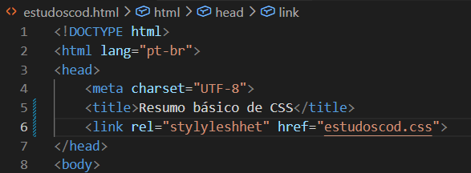
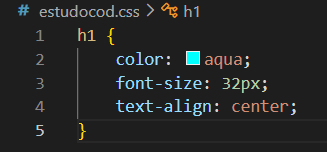
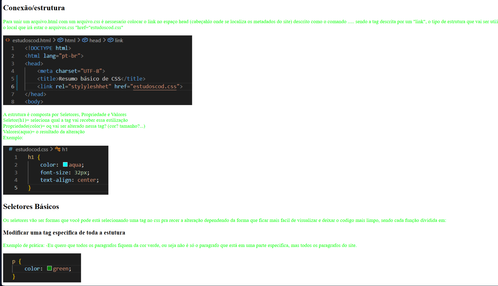
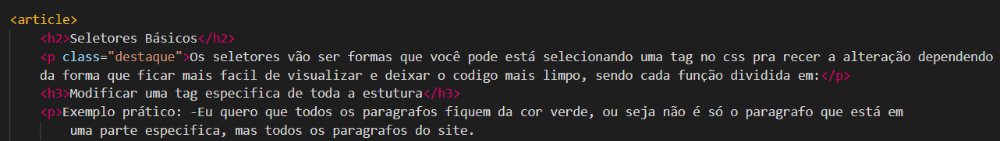
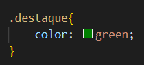
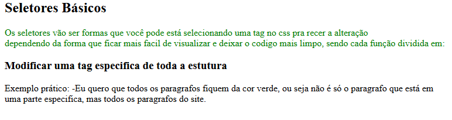

1. Conexão/estrutura
2. Seletores Básicos
Conexão/estrutura
Para unir um arquivo.html com um arquivo.css é nessesario colocar o link no espaço head (cabeçahlo onde se
localiza os metadados do site) descrito como o comando ..... sendo a tag descrita por um "link", o tipo de estrutura
que vai ser utilizada, que no caso é o CSS "rel="styleshet" e o local que irá estar o arquivos.css "href="estudoscod.css"

A estrutura é composta por Seletores, Propriedade e Valores
Seletor(h1)= seleciona qual a tag vai receber essa estilização
Propriedade(color)= oq vai ser alterado nessa tag? (cor? tamanho?...)
Valores(aqua)= o resultado da alteração
Exemplo:

Seletores Básicos
Os seletores vão ser formas que você pode está selecionando uma tag no css pra recer a alteração dependendo
da forma que ficar mais facil de visualizar e deixar o codigo mais limpo, sendo cada função dividida em:
Modificar uma tag especifica de toda a estutura
Exemplo prático: -Eu quero que todos os paragrafos fiquem da cor verde, ou seja não é só o paragrafo que está em
uma parte especifica, mas todos os paragrafos do site.


Colorir parágrafos especificos
Exemplo prático: -Agora eu quero selecionar um parágrafo especifico do meu site pra recer a cor verde.
Para isso você deve colocar uma classe com um nome na tag que você deseja modifica que vai servir para
identificar ela, como por exemplo class=destaque, assim no css colocando .destaque vai selecionar apenas a tag
que possue a classe com esse nome.


